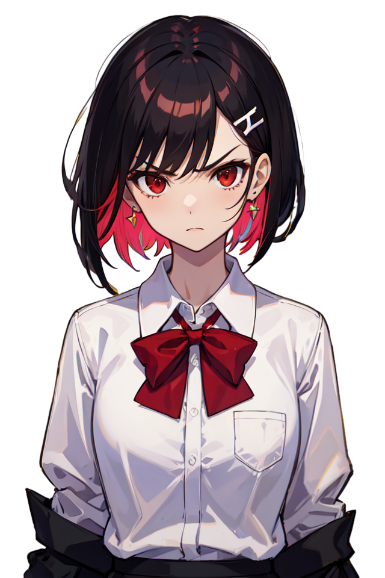
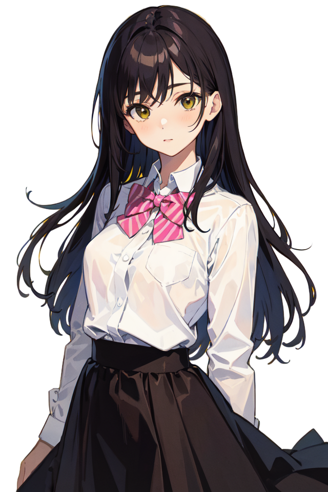

不知名歌剧社
以后会知名吗?
徐哲斌
自信、领导力强，有艺术细胞，热爱歌剧，是歌剧社的灵魂人物。重视才能并擅长挖掘潜力，基本歌唱和表演也不在话下。

曾琪涵
活泼开朗，天生的表演者，对歌剧充满热情，但有时任性。有出色的表演天赋，是歌剧社的欢乐制造者，但也容易情绪化。

梁望舒
安静，聪明，热爱阅读和歌剧，对音乐有深刻的理解。热衷于探索歌剧的深度，是歌剧社的音乐顾问，能够为歌剧社带来独特的视角。